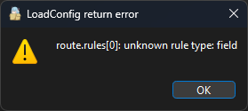

| Ник | Пост | Дата |
|---|---|---|
| Rei(Ayanami Rei) | Всем привет, интересует как можно сделать роут для определенного порта в nekoray Например на nekobox 4 android я могу создать правило и выбрать там нужные порты, а тут этого не вижу. Кто-нибудь знает? Гугление ничего полезного не дало | 2025-01-22T22:21:31.831Z |
| Taf-21(Anton) | Смотрите здесь. Прописывать правила я думаю нужно в “Кастомные маршруты”: | 2025-01-23T07:43:35.895Z |
| Rei(Ayanami Rei) |  | 2025-01-23T08:37:45.638Z |
| Taf-21(Anton) | Вы всё же мануалы почитайте.
| 2025-01-23T09:06:15.474Z |
| 0ka(0ka) | порты дискорда вроде как гораздо шире | 2025-01-23T09:24:59.638Z |
| Taf-21(Anton) | RTFM Structure | 2025-01-23T10:25:32.690Z |
| Rei(Ayanami Rei) | В общем оказалось очень просто, в Custom route (global) прописал такое: Остальные правила из интерфейса тоже подтянулись | 2025-01-23T11:34:46.559Z |
| REM1X | Если это нужно для дискорда на пк не проще проксировать приложение целиком? | 2025-01-24T18:58:30.554Z |
{kind=link}
{kind=link}
{kind=link}